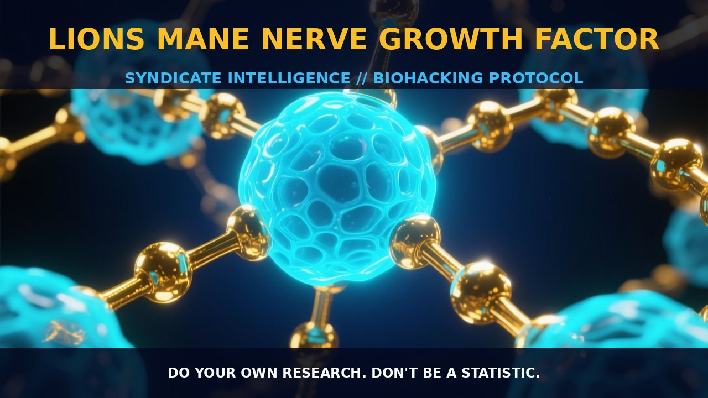

Enhancing Neurogenesis with Lions Mane Mushroom

1. The Mechanism
Lion's Mane mushroom (Hericium erinaceus) is a celebrated remedy in traditional Chinese medicine, renowned for its diverse therapeutic benefits. This mushroom's primary bioactive compounds, hericenones and erinacines, are diterpenoids that significantly stimulate the synthesis of nerve growth factor (NGF) in the brain.
NGF is a neurotrophic factor crucial for the survival, growth, and maintenance of neurons, and it plays a pivotal role in the development and maintenance of the peripheral and central nervous systems. Lion's Mane acts on specific receptors, such as TrkA and p75, enhancing their activity and leading to increased NGF production and neuronal support.
The mushroom also contains high levels of glutamic and aspartic acids, contributing to its umami flavor and potentially enhancing its bioavailability and absorption. Additionally, the polysaccharides and other bioactive components in Lion's Mane regulate inflammatory processes, reduce oxidative stress, and safeguard nerve cells from damage.
The mechanism by which Lion's Mane enhances NGF synthesis involves multiple pathways. Upon ingestion, the bioactive compounds are absorbed and transported to the brain, where they interact with cellular components to upregulate NGF expression. This upregulation is facilitated through the activation of the cAMP response element-binding protein (CREB) pathway, which is a key regulator of NGF transcription.
The CREB pathway enhances the expression of genes involved in neuronal survival and growth, including BDNF (brain-derived neurotrophic factor). BDNF works synergistically with NGF to promote neurogenesis and synaptic plasticity, further enhancing cognitive function and neuronal health.
Lion's Mane's polysaccharides also modulate the gut microbiota, influencing brain function through the gut-brain axis and contributing to overall neuroprotective effects.
2. Biological Leverage
Lion's Mane exerts its biological leverage primarily through its ability to stimulate NGF and BDNF synthesis. By enhancing these neurotrophic factors, the mushroom supports neuronal health and function, potentially improving cognitive performance, repairing brain cells, and enhancing neurogenesis.
NGF promotes the survival, growth, and maintenance of neurons, while BDNF supports the survival of existing neurons and encourages the growth and differentiation of new neurons and synapses. These factors are essential for maintaining the structural and functional integrity of the nervous system.
Lion's Mane's neurotrophic effects are particularly beneficial in the context of age-related cognitive decline and neurodegenerative diseases. By upregulating NGF and BDNF, the mushroom can help protect neurons from damage and support their repair, potentially mitigating the progression of conditions such as Alzheimer's, dementia, Parkinson's, and muscular dystrophy.
The mushroom's polysaccharides and other bioactive components contribute to its neuroprotective effects by regulating inflammatory processes, reducing oxidative stress, and safeguarding nerve cells from damage. These effects are further enhanced by the mushroom's ability to modulate the gut microbiota, influencing brain function through the gut-brain axis.
3. Tactical Implementation
To implement Lion's Mane effectively, it is crucial to consider the dosage and timing of its intake. The recommended dosage typically ranges from 500 mg to 3 grams per day, depending on the strength of the extract and individual needs. It is advisable to start with a lower dose and gradually increase it to assess tolerance and effectiveness.
Taking Lion's Mane in the morning or early afternoon may optimize cognitive benefits, as the effects of neurotrophic factors are more pronounced during periods of high neuronal activity. Stacking Lion's Mane with other nootropics that enhance neurogenesis and cognitive function, such as L-carnosine or Semax, can further enhance its effects.
L-carnosine supports neuronal function and reduces oxidative stress, while Semax increases BDNF levels and supports synaptic plasticity. Combining Lion's Mane with cold thermogenesis can enhance its neuroprotective effects by increasing cortisol levels and reducing inflammatory markers.
Incorporating Lion's Mane into a diet rich in other neuroprotective foods and supplements, such as omega-3 fatty acids and antioxidants, can further enhance its cognitive benefits. Regular consumption of Lion's Mane over several weeks can lead to noticeable improvements in cognitive function, focus, and attention, as well as support neuronal health and repair.
Prostar Life Hack
Start with a lower dose of Lion's Mane (500 mg) and gradually increase to assess tolerance and effectiveness. Take it in the morning or early afternoon to optimize cognitive benefits.
[ AUTHOR: LEAD TECHNICAL RESEARCHER ]